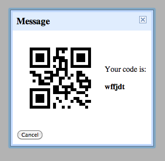

In this section, we'll make sure your device is ready for use with App Inventor 2 and Wifi. This means making sure your device has the Companion App for App Inventor 2 installed.
Step 1: Download and install the MIT AI2 Companion App and install it on your phone.
Download the MIT AI2 Companion App (APK) by clicking this link
OR scan the QR code below to get the APK directly onto your device.
You need install the MIT AI2 Companion only once, and then leave it on your phone or tablet for whenever you use App Inventor.
Troubleshooting:
You must use the latest version of the MIT AI2 Companion App. If you attempt to use an older version of the Companion App with App Inventor, you will be prompted to update it.
If you are having trouble connecting using these wireless instructions, there may be a problem with your phone's connection to the network or a problem with the type of network you are currently using. More information and how to fix these connection issues can be found here: Explain Wifi Connection
Step 2: Connect to Device
From the blocks editor, click the "Connect to Companion" button. A dialog box with instructions, a QR code, and a 6-letter code will display.
Step 3: Start the MIT AI2 Companion App
Start the Companion App on your device by launching it like a normal Android application. If your device has a camera, you can select the "Scan the QR Code" button on the Companion App and scan the QR code displayed on your computer screen by App Inventor. Alternatively, you can enter into the text box the six-character code displayed in on your computer screen by App Inventor. Once the code is entered, press "Connect using Code". You only have to do one of these things, either scan the QR code or enter the six-character code. You do not have to do both.

Your app should now appear on your device. If App Inventor is not communicating with the device, the three most likely problems are:
- You may have an outdated version of the App Inventor Companion App. Download the latest Companion App for App Inventor 2 from above.
- Your device may not be connected to wifi. Make sure your see an IP address at the bottom of the AICompanion App screen on your phone or tablet.
- Your device may not be connected to the same wifi network as your computer. Make sure both devices are connected to the same wifi network name.